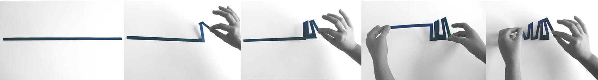
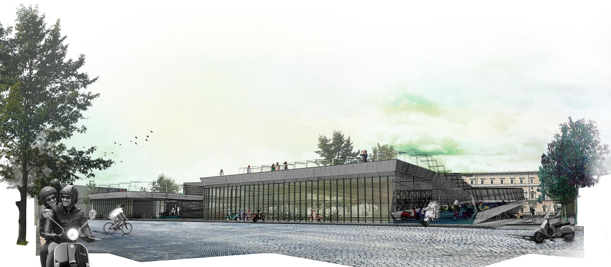
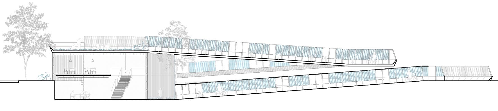
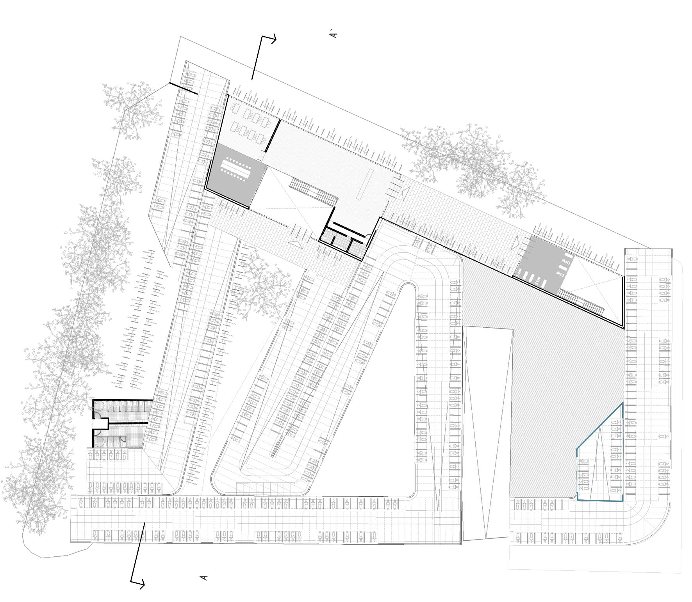
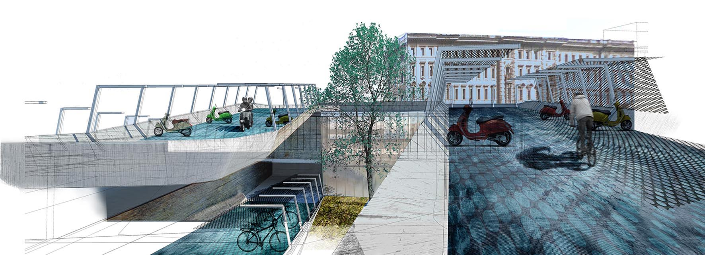
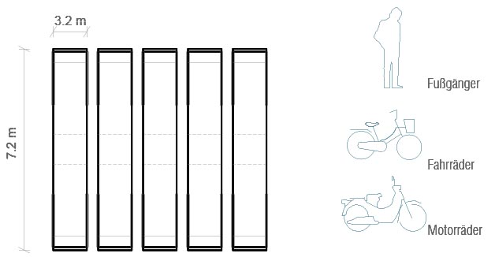
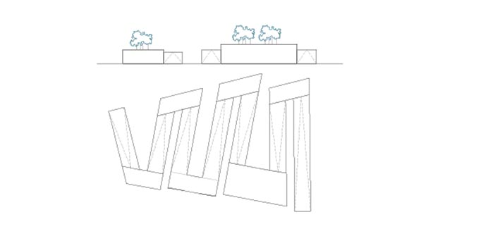
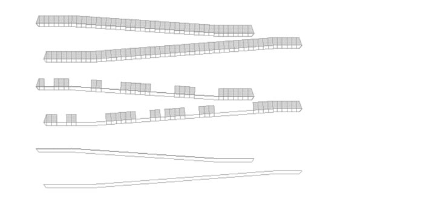
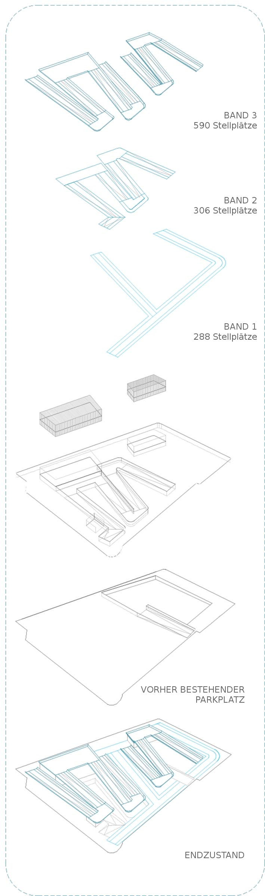

-

Zugangsstockwerk

Hauptfassade

Querschnitt AA

Zugagstockwerk

Ansicht Parkplätze
Der Vorschlag, um das Park- und Verkehrsproblem für Motorräder in Rom zu lösen, basiert auf der Definition eines Moduls mit dem Mindestmaß von 7,2 x 1,2 m, dessen beide Enden Motorradparkplätze sind und das in der Mitte genügend Platz für drei Wege, nämlich für Fahrräder, Motorräder und Fußgänger, lässt.
Das Projekt besteht aus der Wiederholung des Grundmoduls. Ein Band, das sich zusammenfalten und biegen lässt, passt sich an die unterschiedlichen Szenarien an, die an verschiedenen Stellen der Stadt gegeben sind.
Auf diese Art und Weise wird eine ansteigende und/oder abfallende Zickzacklinie geschaffen, und das ergänzende Konzept (Werkstätten, Schulungsräume, Verwaltung oder öffentliche Toiletten) ist in Würfeln untergebracht, die von der Straße aus zugänglich sind und als Stütze für die verschiedenen Bänder dienen, wobei auf dem Dach Parks und Aussichtspunkte entstehen.
Baulich wird ein massives Betonteil definiert, das die horizontale befahrbare Decke bildet, sowie eine leichte Metallstruktur.

Mit diesem auf- und abmontierbaren Teil kann man bedachte oder unbedachte Parkplätze gestalten. Verschiedene Situationen entstehen je nach verschiedenen Parametern wie etwa die Nutzung, das Klima oder visuelle Faktoren.
Dank diesem System kann der Parkplatz erweitert werden, indem man mehr Module in der Höhe hinzufügt, oder abgebaut und an anderer Stelle wieder aufgebaut werden.
